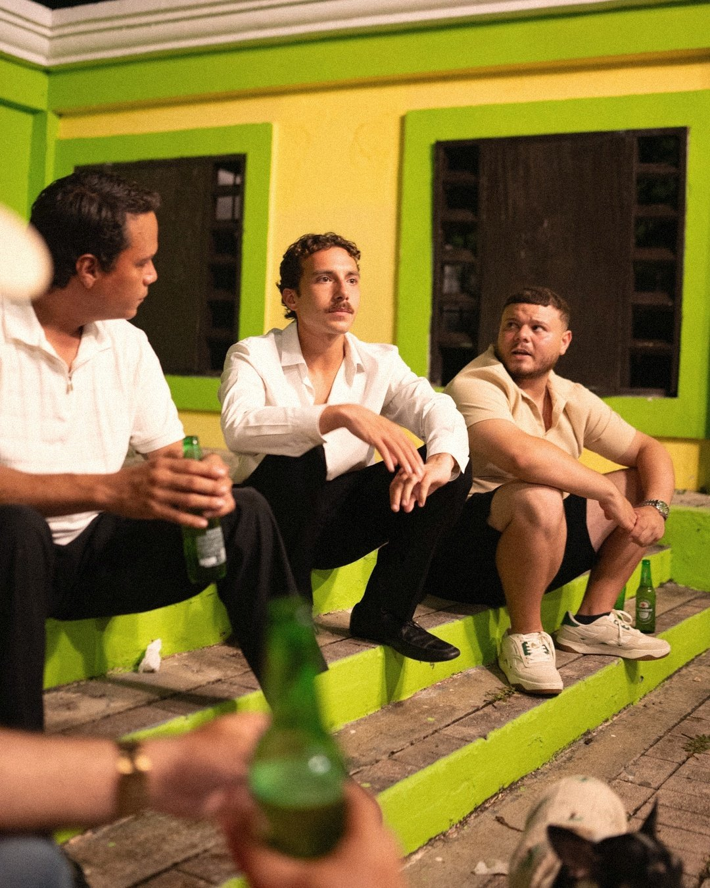
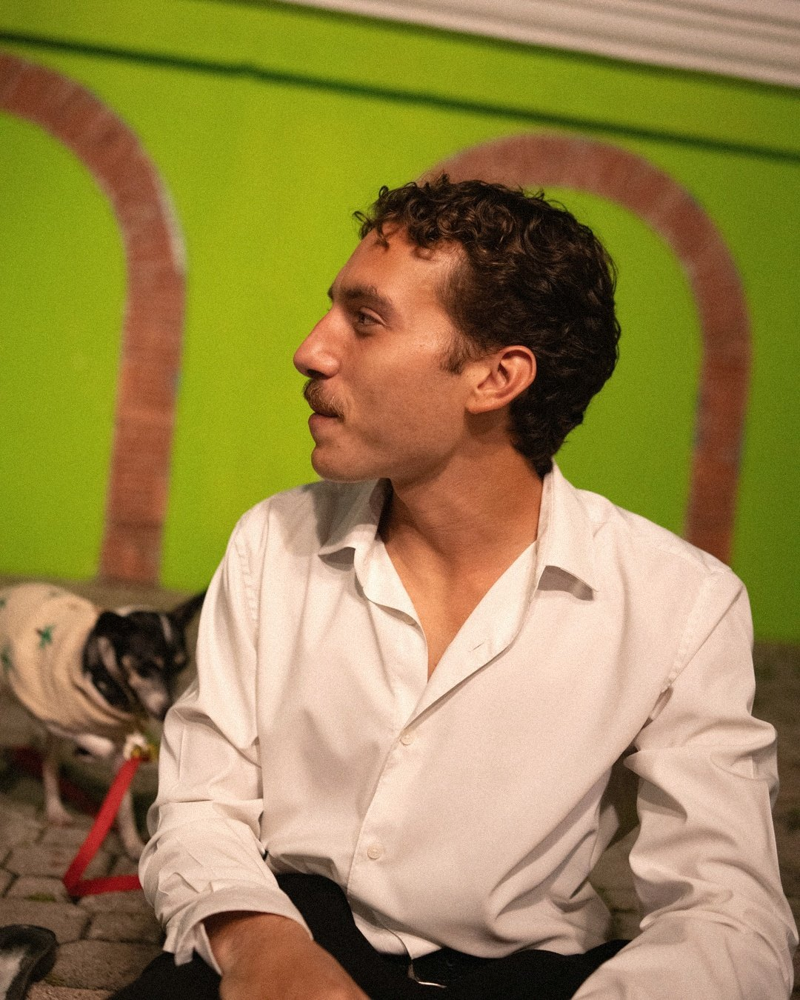
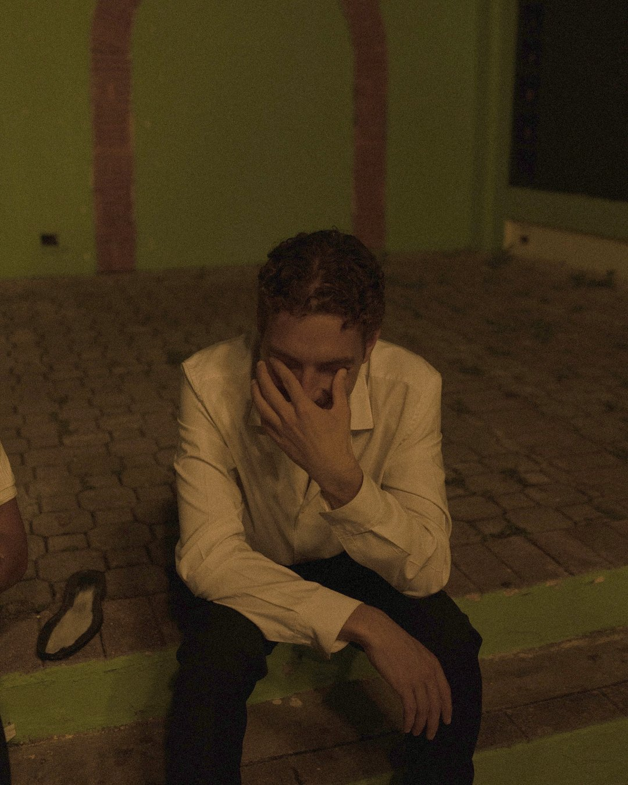
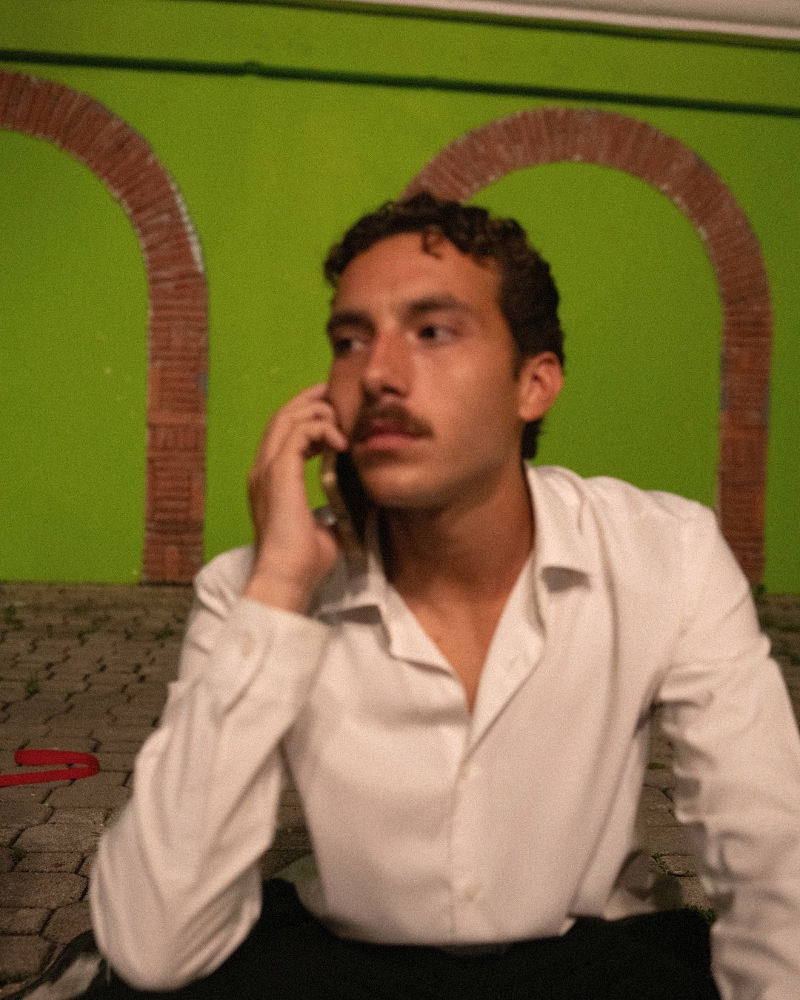

Archivo
La Placita
Placita en Dorado, al lado de Pizza Boy. Paredes verde lima, arcos de ladrillo, escalones pintados.
Aparece en
- Yo y Mi Bocina (13 · X · MMXXVI)




Archivo
Placita en Dorado, al lado de Pizza Boy. Paredes verde lima, arcos de ladrillo, escalones pintados.
Aparece en



